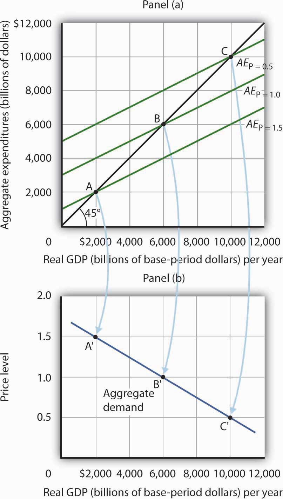
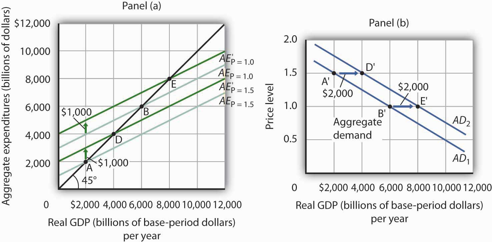

We can use the aggregate expenditures model to gain greater insight into the aggregate demand curve. In this section we shall see how to derive the aggregate demand curve from the aggregate expenditures model. We shall also see how to apply the analysis of multiplier effects in the aggregate expenditures model to the aggregate demand–aggregate supply model.
An aggregate expenditures curve assumes a fixed price level. If the price level were to change, the levels of consumption, investment, and net exports would all change, producing a new aggregate expenditures curve and a new equilibrium solution in the aggregate expenditures model.
A change in the price level changes people’s real wealth. Suppose, for example, that your wealth includes $10,000 in a bond account. An increase in the price level would reduce the real value of this money, reduce your real wealth, and thus reduce your consumption. Similarly, a reduction in the price level would increase the real value of money holdings and thus increase real wealth and consumption. The tendency for price level changes to change real wealth and consumption is called the wealth effectThe tendency for price level changes to change real wealth and consumption..
Because changes in the price level also affect the real quantity of money, we can expect a change in the price level to change the interest rate. A reduction in the price level will increase the real quantity of money and thus lower the interest rate. A lower interest rate, all other things unchanged, will increase the level of investment. Similarly, a higher price level reduces the real quantity of money, raises interest rates, and reduces investment. This is called the interest rate effectThe tendency for a higher price level to reduce the real quantity of money, raise interest rates, and reduce investment..
Finally, a change in the domestic price level will affect exports and imports. A higher price level makes a country’s exports fall and imports rise, reducing net exports. A lower price level will increase exports and reduce imports, increasing net exports. This impact of different price levels on the level of net exports is called the international trade effectThe impact of different price levels on the level of net exports..
Panel (a) of Figure 28.13 "From Aggregate Expenditures to Aggregate Demand" shows three possible aggregate expenditures curves for three different price levels. For example, the aggregate expenditures curve labeled AEP=1.0 is the aggregate expenditures curve for an economy with a price level of 1.0. Since that aggregate expenditures curve crosses the 45-degree line at $6,000 billion, equilibrium real GDP is $6,000 billion at that price level. At a lower price level, aggregate expenditures would rise because of the wealth effect, the interest rate effect, and the international trade effect. Assume that at every level of real GDP, a reduction in the price level to 0.5 would boost aggregate expenditures by $2,000 billion to AEP = 0.5, and an increase in the price level from 1.0 to 1.5 would reduce aggregate expenditures by $2,000 billion. The aggregate expenditures curve for a price level of 1.5 is shown as AEP=1.5. There is a different aggregate expenditures curve, and a different level of equilibrium real GDP, for each of these three price levels. A price level of 1.5 produces equilibrium at point A, a price level of 1.0 does so at point B, and a price level of 0.5 does so at point C. More generally, there will be a different level of equilibrium real GDP for every price level; the higher the price level, the lower the equilibrium value of real GDP.
Figure 28.13 From Aggregate Expenditures to Aggregate Demand
Because there is a different aggregate expenditures curve for each price level, there is a different equilibrium real GDP for each price level. Panel (a) shows aggregate expenditures curves for three different price levels. Panel (b) shows that the aggregate demand curve, which shows the quantity of goods and services demanded at each price level, can thus be derived from the aggregate expenditures model. The aggregate expenditures curve for a price level of 1.0, for example, intersects the 45-degree line in Panel (a) at point B, producing an equilibrium real GDP of $6,000 billion. We can thus plot point B′ on the aggregate demand curve in Panel (b), which shows that at a price level of 1.0, a real GDP of $6,000 billion is demanded.
Panel (b) of Figure 28.13 "From Aggregate Expenditures to Aggregate Demand" shows how an aggregate demand curve can be derived from the aggregate expenditures curves for different price levels. The equilibrium real GDP associated with each price level in the aggregate expenditures model is plotted as a point showing the price level and the quantity of goods and services demanded (measured as real GDP). At a price level of 1.0, for example, the equilibrium level of real GDP in the aggregate expenditures model in Panel (a) is $6,000 billion at point B. That means $6,000 billion worth of goods and services is demanded; point B' on the aggregate demand curve in Panel (b) corresponds to a real GDP demanded of $6,000 billion and a price level of 1.0. At a price level of 0.5 the equilibrium GDP demanded is $10,000 billion at point C', and at a price level of 1.5 the equilibrium real GDP demanded is $2,000 billion at point A'. The aggregate demand curve thus shows the equilibrium real GDP from the aggregate expenditures model at each price level.
In the aggregate expenditures model, a change in autonomous aggregate expenditures changes equilibrium real GDP by the multiplier times the change in autonomous aggregate expenditures. That model, however, assumes a constant price level. How can we incorporate the concept of the multiplier into the model of aggregate demand and aggregate supply?
Consider the aggregate expenditures curves given in Panel (a) of Figure 28.14 "Changes in Aggregate Demand", each of which corresponds to a particular price level. Suppose net exports rise by $1,000 billion. Such a change increases aggregate expenditures at each price level by $1,000 billion.
A $1,000-billion increase in net exports shifts each of the aggregate expenditures curves up by $1,000 billion, to AE′P=1.0 and AE′P=1.5. That changes the equilibrium real GDP associated with each price level; it thus shifts the aggregate demand curve to AD2 in Panel (b). In the aggregate expenditures model, equilibrium real GDP changes by an amount equal to the initial change in autonomous aggregate expenditures times the multiplier, so the aggregate demand curve shifts by the same amount. In this example, we assume the multiplier is 2. The aggregate demand curve thus shifts to the right by $2,000 billion, two times the $1,000-billion change in autonomous aggregate expenditures.
Figure 28.14 Changes in Aggregate Demand
The aggregate expenditures curves for price levels of 1.0 and 1.5 are the same as in Figure 28.13 "From Aggregate Expenditures to Aggregate Demand", as is the aggregate demand curve. Now suppose a $1,000-billion increase in net exports shifts each of the aggregate expenditures curves up; AEP=1.0, for example, rises to AE′P=1.0. The aggregate demand curve thus shifts to the right by $2,000 billion, the change in aggregate expenditures times the multiplier, assumed to be 2 in this example.
In general, any change in autonomous aggregate expenditures shifts the aggregate demand curve. The amount of the shift is always equal to the change in autonomous aggregate expenditures times the multiplier. An increase in autonomous aggregate expenditures shifts the aggregate demand curve to the right; a reduction shifts it to the left.
Sketch three aggregate expenditures curves for price levels of P1, P2, and P3, where P1 is the lowest price level and P3 the highest (you do not have numbers for this exercise; simply sketch curves of the appropriate shape). Label the equilibrium levels of real GDP Y1, Y2, and Y3. Now draw the aggregate demand curve implied by your analysis, labeling points that correspond to P1, P2, and P3 and Y1, Y2, and Y3. You can use Figure 28.13 "From Aggregate Expenditures to Aggregate Demand" as a model for your work.
Using a large-scale model of the U.S. economy to simulate the effects of government policies, Princeton University professor Alan Blinder and Moody Analytics chief economist Mark Zandi concluded that the expansionary fiscal, monetary, and other policies aimed at relieving the financial crisis (such as the Troubled Asset Relief Program, or TARP) worked together from 2008 onward to effectively combat the Great Recession and probably kept it from turning into the Great Depression 2.0. Specifically, they estimated that U.S. GDP would have fallen about 12% peak-to-trough and that the unemployment rate would have hit 16.5% without these policies, instead of GDP declining about 4% and the unemployment rate reaching about 10%. While they attribute the bulk of the improvement to monetary and other financial policies, they found that fiscal policies also played a substantial role. For example, they concluded that fiscal stimulus added more than 3% to real GDP in 2010.
How much did the different components of the fiscal policies contribute? The following table provides estimates for the multiplied effects of various stimulus measures that were considered. In general, they estimate a stronger “bang for the buck,” or multiplier, from spending increases than from tax cuts.
| Tax cuts | Bang for the buck |
| Nonrefundable lump-sum tax rebate | 1.01 |
| Refundable lump-sum tax rebate | 1.22 |
| Temporary tax cuts | |
| Payroll tax holiday | 1.24 |
| Across-the-board tax cut | 1.02 |
| Accelerated depreciation | 0.25 |
| Permanent tax cuts | |
| Extend alternative minimum tax patch | 0.51 |
| Make Bush income tax cuts permanent | 0.32 |
| Make dividend and capital gains tax cuts permanent | 0.32 |
| Spending increases | |
| Extending UI benefits | 1.61 |
| Temporary increase in food stamps | 1.74 |
| General aid to state governments | 1.41 |
| Increased infrastructure spending | 1.57 |
While Blinder and Zandy acknowledge that no one can know for sure what would have happened without the policy responses and that not all aspects of the programs were perfectly designed or implemented, they feel strongly that the aggressive policies were, overall, appropriate and worth taking.
Source: Alan S. Blinder and Mark Zandi, “How the Great Recession Was Brought to an End,” Moody’s Economy.com, July 27, 2010.
The lowest price level, P1, corresponds to the highest AE curve, AEP = P1, as shown. This suggests a downward-sloping aggregate demand curve. Points A, B, and C on the AE curve correspond to points A′, B′, and C′ on the AD curve, respectively.